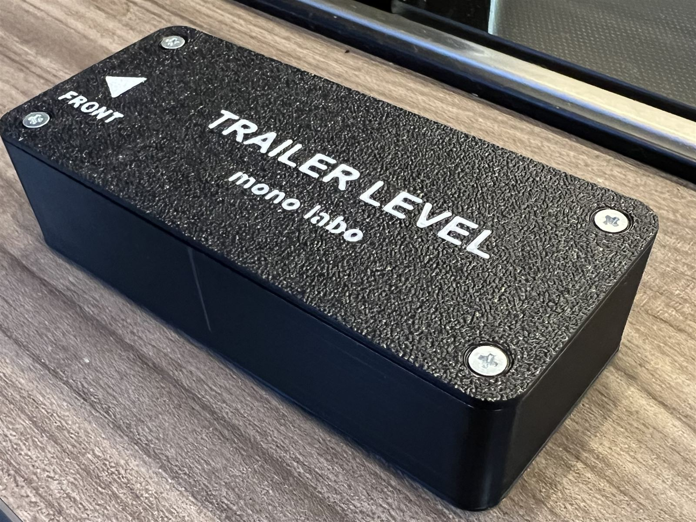
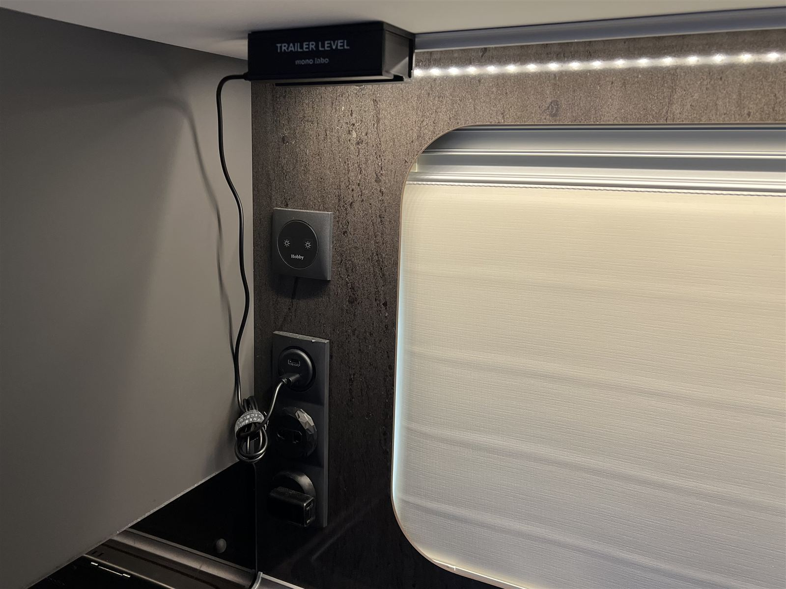
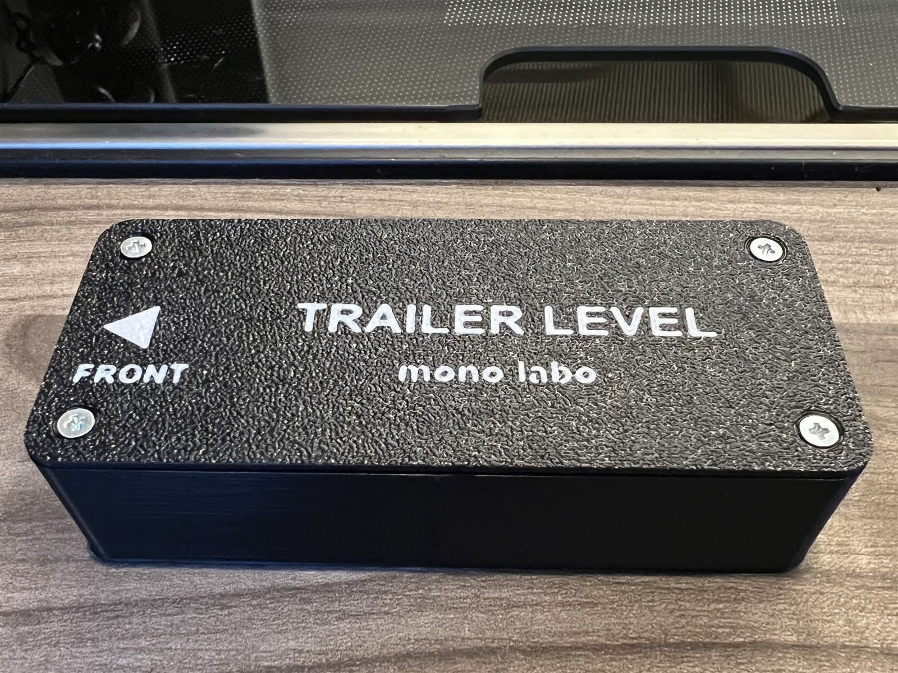
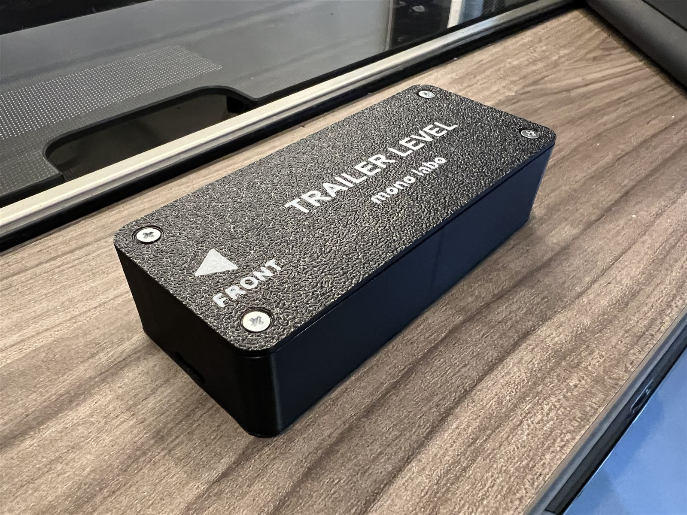
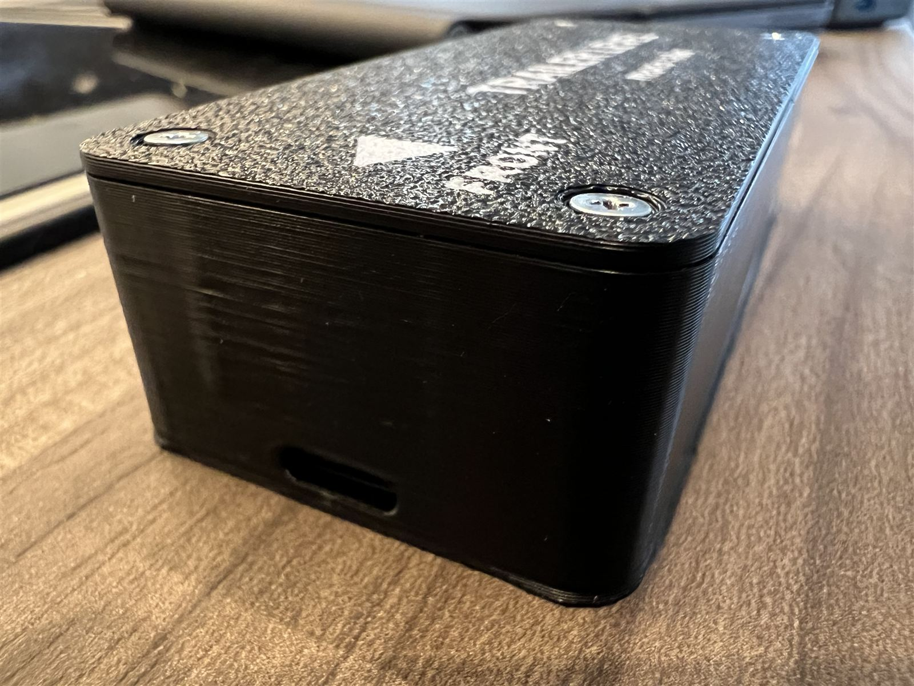

キャンピングトレーラー・キャンピングカーの後付け水平モニター。本体を車内に置けば、手元のスマホがワイヤレスの水準器に。ジャッキやランプを調整しながら、その場で0.1°単位の傾きを確認できます。
ABS樹脂の3Dプリント筐体にセンサーとWiFiを内蔵。電源はUSB-Cひとつです。





キャンプ場に着いてからの「水平出し」、意外とストレスです。
「計器としてちゃんと使えること」にこだわって作っています。
設置も設定も、難しいことはありません。
TrailerLevelの本体は、傾きだけでなくトレーラーの「見えない状態」を映す計器に育てていきます。水平出しは、その最初の機能です。
※ LPガス残量計は水平モニターとは別の追加機能です。水平モニター単体でもお使いいただけます。
TRAILER LEVEL is a Wi-Fi leveling monitor for camper trailers. Place the unit inside your trailer, join its Wi-Fi with your phone, and your browser becomes a real-time 0.1° bubble level — no app required. It is currently sold in Japan on BOOTH; international buyers can order through proxy services such as Buyee. Please note that the interface and manual are Japanese-only for now — an English version is under consideration. Questions are welcome via Instagram @trailerjourney.style.